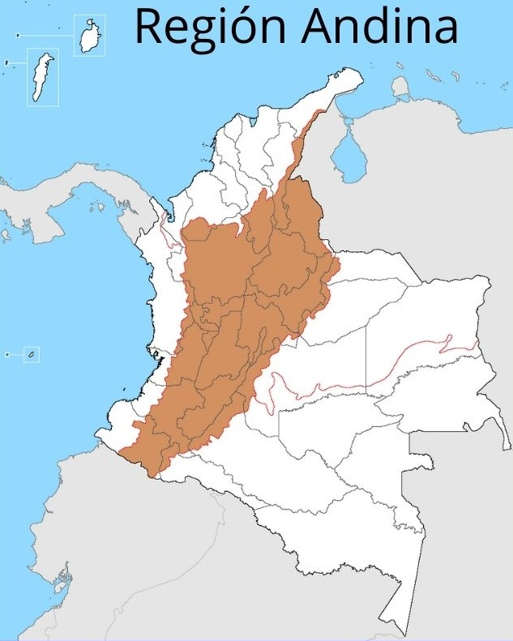

REGIÓN ANDINA
REGION
ANDINA
DE COLOMBIA
 La Región Andina se expande por toda Colombia, y por ella pasan tres cordilleras que pertenecen a una división de la cordillera de Los Andes. Estas son la Cordillera Occidental, Cordillera Central y Cordillera Oriental. La variabilidad en esta región se debe a los cambios de altitud, esto hace que sea una zona con una diversidad ecológica que merece ser conocida.
Características de la región Andina:
Antes de describir las fauna y flora de la región Andina, hablaremos sobre las características principales de la región Andina. Algunas de dichas características son las siguientes:
- Es la región con mayor número de habitantes de Colombia: exactamente con el 70% de la población.
- Cuenta con la mayor parte de la actividad económica: por los recursos hídricos que tiene, además por las tierras tan productivas que son aprovechadas para la agricultura. Otro sectores económicos vienen de la explotación de petróleo y la minería.
- El café es su seña de identidad: en la región Andina podemos observar que parte del territorio se usa para el cultivo del café.
- Cuenta con tres cordilleras: dentro de ellas encontramos una gran riqueza de formaciones geográficas naturales como volcanes, bosques, páramos, gran variedad de láminas de agua (lagos, ríos, termas…), yacimientos mineros, entre otras. Si quieres saber qué es un Páramo: características, flora y fauna, no dudes en leer este artículo de EcologíaVerde que te recomendamos.
- Cuenta con un relieve montañoso: de hecho, sus picos destacados son el Nevado del Quindío, el Nevado del Tolima y Ritacuba Blanco.
- Tiene importantes cuencas hidrográficas: como lo son las de los ríos Cauca y Magdalena, son muy caudalosos y desembocan en el Mar Caribe. Además de estos dos, cuenta con otros ríos también con abundante caudal como son el Lebrija, el Putumayo, el Sinú, el Sumapaz y el Caquetá. Son fuentes para obtener agua potable para la población y para genera energía hidroeléctrica.
- Su clima es muy cambiante: dependiente de la altitud, latitud, vegetación y orografía, es por eso que, también, otra de las características de la región Andina es que se pueden encontrar tres tipos de climas: tropical, subtropical y templado.
- Cuenta con varios asentamientos indígenas: estos aún mantienen su cultura y costumbres que se caracterizan por un cuidado de la naturaleza.
- Tiene una flora y fauna únicas: estas varían dependiendo de la altitud. A continuación, vamos a hablar más detalladamente de estas características de la región Andina que engloban a especies de animales y plantas.